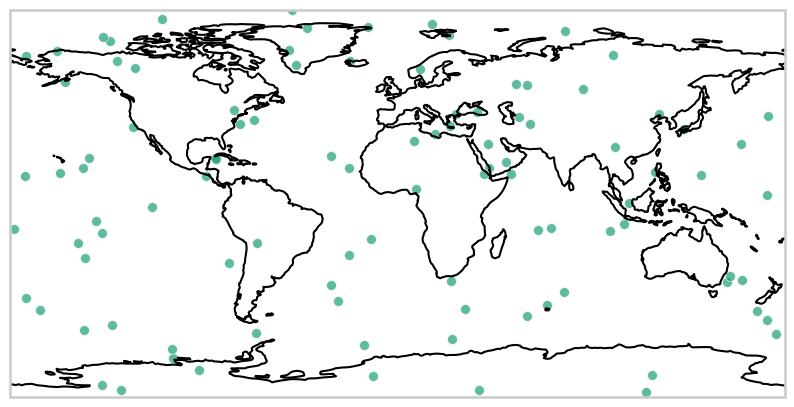

Chapter 4 - Geospatial Data Visualization
Geospatial data visualization is the art and science of representing spatial information in a visually appealing and informative manner. Through maps, charts, and interactive graphics, this chapter explores techniques to effectively communicate complex spatial relationships, patterns, and trends. From thematic mapping to 3D visualization, we delve into the diverse methods and tools that enable us to unlock insights and tell compelling stories about our world's geography.
Exploring Different Visualization Techniques for Geospatial Data
Geospatial data visualization is a crucial aspect of understanding and interpreting spatial information effectively. Various visualization techniques exist, each tailored to highlight different aspects of geospatial data, ranging from simple thematic maps to more complex interactive visualizations. Here, we delve into some of the key visualization techniques used in geospatial analysis and exploration:
1. Thematic Mapping: Thematic mapping involves representing spatial data using visual variables such as color, size, and shape to display thematic information. Common types of thematic maps include choropleth maps, where colors represent different attribute values within predefined geographic areas (e.g., population density maps), and proportional symbol maps, where symbols are scaled proportionally to the attribute value they represent (e.g., circle size representing population size in cities).
2. Heatmaps: Heatmaps visualize the density or intensity of spatial phenomena by representing data using a gradient color scale. Areas with higher concentrations or densities appear in warmer colors (e.g., red), while areas with lower concentrations appear in cooler colors (e.g., blue). Heatmaps are commonly used to visualize phenomena such as population density, crime hotspots, and environmental pollution levels.
3. 3D Visualization: 3D visualization techniques add an additional dimension to geospatial data, allowing for more immersive and realistic representations of terrain, buildings, and other features. Techniques such as 3D terrain modeling, extrusion of 2D features into 3D shapes, and virtual reality (VR) environments enable users to explore spatial data from different perspectives and angles, enhancing spatial understanding and analysis.
4. Time Series Visualization: Time series visualization techniques are used to explore temporal patterns and trends in geospatial data over time. Time-enabled maps, animated maps, and time sliders allow users to visualize changes in spatial phenomena (e.g., urban growth, land cover changes, climate patterns) across different time periods, facilitating the identification of trends, anomalies, and relationships.
5. Interactive Visualization: Interactive visualization techniques enable users to interactively explore and manipulate geospatial data, enhancing engagement and facilitating data exploration. Interactive maps, web-based GIS applications, and dashboards allow users to dynamically query, filter, and visualize spatial data based on user-defined parameters, enabling deeper exploration and analysis of spatial patterns and relationships.
6. Network Visualization: Network visualization techniques visualize spatial relationships between interconnected features, such as transportation networks, social networks, or supply chains. Techniques such as network graphs, flow maps, and spider diagrams represent connections between nodes or locations, highlighting patterns of movement, connectivity, and interaction within the spatial network.
In summary, exploring different visualization techniques for geospatial data enables users to effectively communicate spatial information, uncover patterns and trends, and gain insights into complex spatial relationships. By leveraging a diverse range of visualization techniques, analysts, researchers, and decision-makers can enhance their understanding of spatial phenomena and make informed decisions based on spatial data analysis.
Plotting maps using Matplotlib, Seaborn, and other Python libraries
Plotting maps using Matplotlib, Seaborn, and other Python libraries provides powerful tools for visualizing geospatial data in a variety of formats and styles. While Matplotlib is a general-purpose plotting library, Seaborn is specifically designed for statistical data visualization, and other libraries like Plotly and Folium offer additional features such as interactive mapping capabilities. Here, we'll explore how each of these libraries can be used to plot maps in Python.
Plotting maps using Matplotlib
Matplotlib is a powerful Python library for creating static, publication-quality plots. While it doesn't have built-in support for geographic data, it can be combined with other libraries like Cartopy to plot maps. In this tutorial, we'll walk through the steps to plot maps using Matplotlib and Cartopy.
Step 1: Install Required Libraries
Before we begin, make sure you have Matplotlib and Cartopy installed. You can install them using pip:
pip install matplotlib
pip install cartopy
Step 2: Import Libraries
import matplotlib.pyplot as plt
import cartopy.crs as ccrs
We import Matplotlib as plt and Cartopy's coordinate reference system module as ccrs.
Step 3: Create a Basic Map
# Create a figure and axis with Plate Carree projection
fig = plt.figure(figsize=(10, 6))
ax = fig.add_subplot(1, 1, 1, projection=ccrs.PlateCarree())
# Set global extent
ax.set_global()
# Add coastlines
ax.coastlines()
# Show the plot
plt.show()
This code creates a basic map with Matplotlib and Cartopy. We create a figure and axis with a Plate Carree projection, set the global extent, and add coastlines. The figure is shown below:
Step 4: Customize the Map
You can customize the map by adding features such as gridlines, labels, and map projections.
fig = plt.figure(figsize=(10, 6))
ax = fig.add_subplot(1, 1, 1, projection=ccrs.PlateCarree())
# Set extent to show Europe
ax.set_extent([-10, 40, 35, 60], crs=ccrs.PlateCarree())
# Add coastlines, gridlines, and land
ax.coastlines()
ax.gridlines(draw_labels=True)
ax.add_feature(cfeature.LAND, edgecolor='black')
plt.show()
In this example, we set the extent to show Europe, add gridlines with labels, and show land features with black borders. The figure is shown below:
Step 5: Plot Data on the Map
You can plot data on the map using standard Matplotlib plotting functions.
fig = plt.figure(figsize=(10, 6))
ax = fig.add_subplot(1, 1, 1, projection=ccrs.PlateCarree())
# Plot cities
ax.plot(-0.118092, 51.509865, 'ro', markersize=8, transform=ccrs.PlateCarree()) # London
ax.plot(2.352222, 48.856613, 'bo', markersize=8, transform=ccrs.PlateCarree()) # Paris
# Add coastlines
ax.coastlines()
plt.show()
In this example, we plot two cities (London and Paris) on the map using red and blue markers, respectively. The figure is shown below:
Step 6: Save the Map
You can save the map as an image file using the savefig function.
fig.savefig('map.png', dpi=300, bbox_inches='tight')
This saves the map as a PNG image with a resolution of 300 dpi and tight bounding box.
We've successfully plotted maps using Matplotlib and Cartopy. With these techniques, you can create custom maps for various geographic visualizations and analyses in Python. Experiment with different projections, features, and data to create informative and visually appealing maps tailored to your needs.
Plotting Maps Using Seaborn
Seaborn is a powerful Python library for statistical data visualization built on top of Matplotlib. While Seaborn is primarily designed for statistical plots, it can be used to enhance the visual appearance of maps created using other libraries like Matplotlib and Cartopy. In this tutorial, we'll explore how to use Seaborn to plot maps and customize their appearance.
Step 1: Install Required Libraries
Before we begin, make sure you have Seaborn installed. You can install it using pip:
pip install seaborn
Step 2: Import Libraries
import matplotlib.pyplot as plt
import seaborn as sns
import cartopy.crs as ccrs
We import Matplotlib as plt, Seaborn as sns, and Cartopy's coordinate reference system module as ccrs.
Step 3: Create a Basic Map
# Create a figure and axis with Plate Carree projection
fig = plt.figure(figsize=(10, 6))
ax = fig.add_subplot(1, 1, 1, projection=ccrs.PlateCarree())
# Set global extent
ax.set_global()
# Add coastlines
ax.coastlines()
# Show the plot
plt.show()
This code creates a basic map with Matplotlib and Cartopy, similar to the generated using the Matplotlib library in the previous section. The figure is shown below:

Step 4: Customize the Map with Seaborn
You can use Seaborn to customize the appearance of the map by setting styles and themes.
# Set Seaborn style and context
sns.set_style("whitegrid")
sns.set_context("talk")
# Create a figure and axis with Plate Carree projection
fig = plt.figure(figsize=(10, 6))
ax = fig.add_subplot(1, 1, 1, projection=ccrs.PlateCarree())
# Set global extent
ax.set_global()
# Add coastlines with a customized color
ax.coastlines(color='gray')
# Customize gridlines with Seaborn color palette
ax.gridlines(draw_labels=True, linestyle='--', color=sns.color_palette("Set2"))
# Show the plot
plt.show()
In this example, we've made the following customizations using Seaborn:
-
Set the Seaborn style to "whitegrid" for a background with gridlines.
-
Set the Seaborn context to "talk" to adjust the font scale and line width for better readability.
-
Changed the color of coastlines to gray for a different visual appearance.
-
Used a Seaborn color palette ("Set2") for the gridline colors.
These customizations demonstrate how Seaborn can be used alongside Matplotlib and Cartopy to create visually appealing maps with enhanced aesthetics and readability. Feel free to further experiment with Seaborn's styling options to tailor the map's appearance according to your preferences. The figure is shown below:
Step 5: Plot Data on the Map with Seaborn Customization
You can plot data on the map using standard Matplotlib plotting functions, and then customize the appearance using Seaborn.
import numpy as np
# Generate sample data
np.random.seed(0)
num_points = 100
lons = np.random.uniform(low=-180, high=180, size=num_points)
lats = np.random.uniform(low=-90, high=90, size=num_points)
# Create a figure and axis with Plate Carree projection
fig = plt.figure(figsize=(10, 6))
ax = fig.add_subplot(1, 1, 1, projection=ccrs.PlateCarree())
# Plot random points with Seaborn color palette and marker style
sns.scatterplot(x=lons, y=lats, color=sns.color_palette("Dark2")[0], marker='o', s=50, alpha=0.7)
# Add coastlines
ax.coastlines()
# Show the plot
plt.show()
In this updated example:
-
We generate random latitude and longitude coordinates as sample data.
-
We use Seaborn's scatterplot function to plot the random points on the map. We customize the color using a Seaborn color palette ("Dark2"), marker style to 'o', marker size (s=50), and transparency (alpha=0.7).
The figure is shown below:

Step 6: Save the Map
You can save the map as an image file using the savefig function, similar to the Matplotlib tutorial.
fig.savefig('map_seaborn.png', dpi=300, bbox_inches='tight')
This saves the map as a PNG image with a resolution of 300 dpi and tight bounding box.
We've successfully plotted maps using Seaborn to enhance the visual appearance of geospatial data. With Seaborn's styling options, you can create visually appealing maps tailored to your specific needs and preferences. Experiment with different styles, themes, and data to create informative and aesthetically pleasing maps for your analyses and presentations.